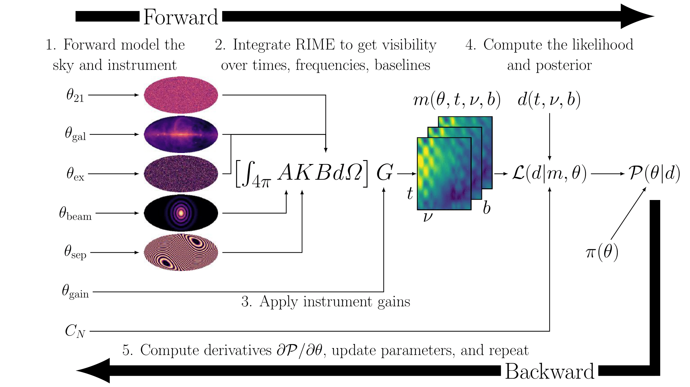

The Bayesian Line Intensity Mapping (BayesLIM) project leverages advances in machine learning software and hardware to deliver a comprehensive Bayesian forward model for cosmological intensity mapping experiments. Its goal is to enable the first robust detection of the high redshift 21 cm signal, while
faithfully accounting for covariant uncertainties between the signal and contaminants.
The BayesLIM codebase is currently under development and will be released in 2023.
Line intensity mapping (LIM)--in particular 21 cm LIM--is a theoretically powerful
probe of high redshift cosmology and astrophysics. However, this technique faces
the daunting challenge of mitigating astrophysical and instrumental contaminants
by many orders of magnitude in order to make a robust detection of the signal.
Unmodeled contaminants and uncertainties that are covariant with the signal
can easily lead to false detections. Given the delicate nature of these
measurements, what kind of data model and analysis pipeline is best suited to
making a robust detection? Arguably, the optimal approach is to construct
a joint posterior distribution across the 21 cm signal and all foreground and
instrumental parameters, and to characterize the maximum a posteriori (MAP)
and its shape to account for covariant uncertainties.
Historically, this has been a computationally prohibitive task,
forcing us to condition our data model on the assumption of a
known foreground model (e.g. a known covariance), or a known instrument model.
However, leveraging recent advances in machine learning software and hardware, the BayesLIM project seeks to make joint 21 cm posterior optimization possible for the first time.

A flowchart describing the BayesLIM forward model.
Training the model (similar to how one trains
a neural network) is performed by a series of forward and backward
calls to the model. We start with a (sparse) parameterization
of the 21 cm sky signal, the foreground signal (diffuse and point source)
the instrumental beam, and gains, and forward model them through to
the interferometric visibilities (1, 2, & 3). Then we compare
the forward model against our raw data collected by the telescope
to compute a likelihood given a noise model (4), and then incorporate any
priors on our model parameters to form the posterior (4). Finally,
we use automatic differentiation to rapidly compute the gradient of
the posterior with respect to all of our model parameters, and
use an optimization scheme to update our parameters until convergence.
The shape of the posterior can then be approximated via
the inverse Fisher matrix, or by using the gradient information
to efficiently MCMC sample the parameter space (e.g. via HMC).
Separately, BayesLIM is a
fast and accurate forward model visibility simulator
generalized direction-dependent and direction-independent calibration solver
sparse signal parameterization and modeling tool
constrained optimizer and MCMC sampler
GPU-portable and AD-enabled data modeling tool
Together, these components allow BayesLIM to jointly constrain the posterior
distribution of the foregrounds, instrumental systematics, and the 21 cm signal,
while making it easy to incorporate physically motivated priors in the inference
process.
Note that while BayesLIM is currently developed with 21 cm LIM as an application, the BayesLIM framework is equally applicable to galaxy emission-line LIM at low and high redshifts (future work).
More details about BayesLIM and its development to come shortly.
BayesLIM is currently supported by an XSEDE GPU grant (2022) on PSC's Bridges2 machine.